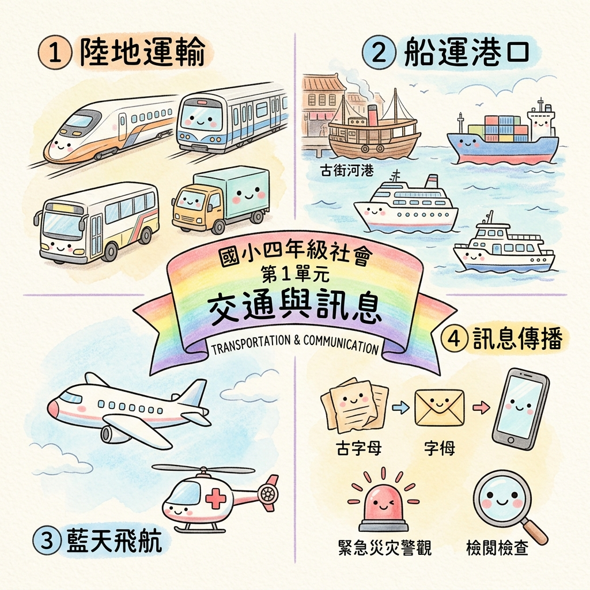

🌟 全冊單元大總覽
單元大架構
交通與訊息
(TRANSPORTATION & COMMUNICATION)陸海空現代交通發展、歷史變遷與智慧數位訊息傳播

🔍 點擊圖片可放大高解析度檢視
🎨 100% 國小四年級社會課綱手繪彩色鉛筆粉彩心智圖（AI 生成原畫）
1
1. 陸地運輸大動脈 (Land Transport)
🎨 圖解焦點：高鐵高速列車、捷運地下鐵、公路幸福巴士、物流貨車
- 鐵道演進：蒸汽火車 → 柴油火車 → 電氣化鐵路 → 高速鐵路（打造北高一日生活圈）。
- 捷運系統：班次密集、準時省時、轉乘便利，減少都會塞車與空氣汙染。
- 公路網絡：機動性高、服務範圍廣，高速公路運貨，偏鄉幸福巴士深入社區。
2
2. 船運港口與水運 (Maritime Shipping)
🎨 圖解焦點：古早河運商船、國際貨櫃輪、豪華觀光郵輪、離島交通客船
- 河運變遷：早期淡水河運帶動新莊老街；現今泥沙淤積航運沒落，轉型月津港、愛河觀光。
- 海運功能：臺灣四面環海，商人託運貨櫃輪、觀光客搭郵輪出海旅遊。
- 離島連繫：澎湖、金門、馬祖、綠島與蘭嶼日常仰賴交通船採買與就醫。
3
3. 藍天飛航萬里行 (Air Aviation)
🎨 圖解焦點：客運民航機、離島定期螺旋槳飛機、空中緊急救護直升機
- 空運特色：運輸速度最快、票價最高，主要承擔國際遠程與高價值急件。
- 本島航線沒落：西部城市間國內航線因高鐵與高速公路進步而停飛退場。
- 離島與急難救援：穩定維持離島就學觀光；重大傷病由直升機緊急後送。
4
4. 數位時代智慧通 (Information & Media)
🎨 圖解焦點：信鴿驛站、復古電報機、智慧手機、地震告警廣播、查證放大鏡
- 傳播變遷：信鴿驛站 → 電報書信（費用高耗時長） → 手機與網路（即時無國界）。
- 生活與防災：視訊遠距醫療、國家級災害防救警報（地震速報爭取避難時間）。
- 數位素養：眼見不一定為憑，收到訊息「先查證、不亂傳」，保護隱私與重視實體交流。
📌
💡 朗朗上口記憶口訣
「鐵公路串聯全臺跑，高鐵一日生活好；船運空運通離島，查證訊息不亂導！」
🛡️ 易錯迷思避雷針（段考必背考點）
❌ 常見迷思：臺灣本島各城市間目前仍然廣泛搭乘國內飛機往返？
✔️ 觀念釐清：錯誤！因高鐵與高速公路非常進步快速，本島西部城市間國內航空已全數停飛。
⭐ 隨堂快問快答
請問將臺灣西部各大都會串聯成「一日生活圈」，且速度最快的陸上軌道交通工具是什麼？
🎉 標準解答與解析：高速鐵路（高鐵）！